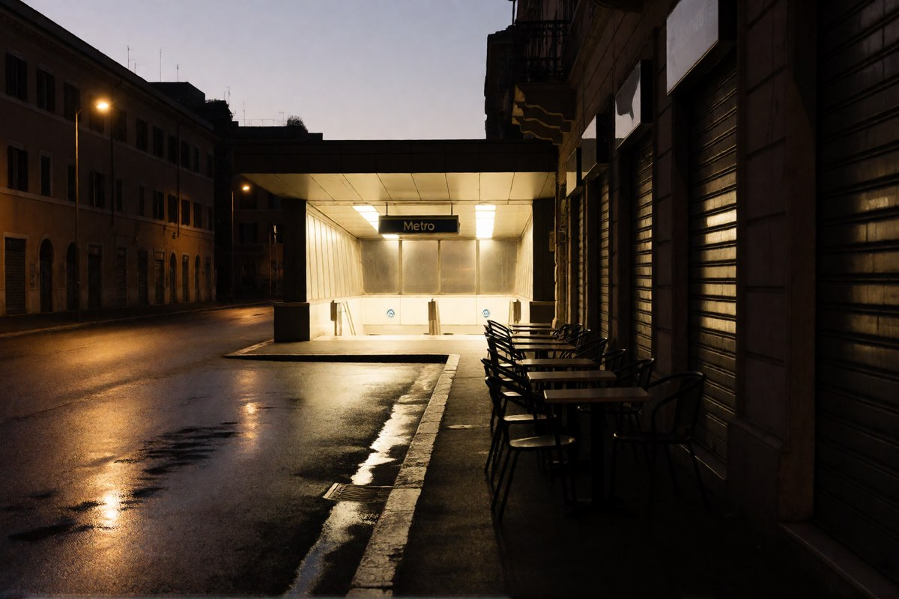

Cronaca · 17 novembre 2026
Ronde contro i migranti a Rebibbia, la Digos indaga

A Roma una trentina di persone, alcune con i cani al guinzaglio, ha attraversato il quartiere intimando a ragazzi stranieri di andarsene. Dieci identificati e un'informativa in procura: si valuta l'aggravante dell'odio razziale.
di Franco Zanghì
Martedì 17 novembre, in serata, una trentina di persone ha attraversato le strade di Rebibbia, alla periferia est di Roma. Alcuni avevano i cani al guinzaglio. Il grido, ripetuto davanti ai bar e ai negozi, era «questa è casa nostra, ve ne dovete andare». Alla testa del gruppo, secondo la Repubblica, c'era Simone Carabella, un influencer romano che sui social racconta le proprie iniziative contro il degrado dei quartieri e che il quotidiano definisce di estrema destra.
Che cosa è accaduto
La polizia era intervenuta per la segnalazione di un presidio spontaneo di cittadini contro il degrado. Poco dopo, scrive l'ANSA, gli animi si sono accesi: nei video circolati in rete si vedono migranti accerchiati, minacciati e insultati. Secondo la Repubblica il corteo è andato avanti per circa un'ora fra Rebibbia, Ponte Mammolo e Casal de' Pazzi. Alcuni ragazzi di origine africana sarebbero stati fatti alzare dai tavolini di un bar davanti alla stazione della metropolitana; uno, racconta Open, è stato inseguito fino dentro una farmacia. Un commerciante straniero, raggiunto nella sua pizzeria, prova a difendersi: «Sto lavorando, ho una famiglia».
Nel quartiere, scrive la Repubblica, la tensione era salita dopo che un ragazzo della zona era stato derubato, e quella di martedì era già la terza sera di presidi. Il titolare di una tavola calda davanti alla metropolitana racconta che qualche giorno prima qualcuno gli aveva detto che gli avrebbe bruciato il locale.
L'indagine
Sul caso lavora la Digos. Gli agenti hanno acquisito i video ripresi sul posto e quelli pubblicati in rete, compresi, secondo la Repubblica, quelli di un giovane esponente di Fratelli d'Italia che da qualche mese accompagna Carabella. Dieci persone sono state identificate e la questura ha trasmesso un'informativa alla procura, che valuta diverse ipotesi di reato, fra cui quelle aggravate dalla finalità di odio razziale. Per ora nessuno è accusato di nulla e ciascuno potrà far valere le proprie ragioni. Il prefetto, riferiscono le cronache del 19 novembre, ha escluso che a Carabella venga assegnata una scorta.
Le reazioni
Il sindaco di Roma, Roberto Gualtieri, ha sentito il prefetto e ha ribadito che l'ordine pubblico spetta soltanto alle forze dell'ordine. Il presidente del quarto municipio, Massimiliano Umberti, parla di «un'intimidazione razzista»: «A Roma non c'è e non ci sarà spazio per ronde, squadracce o giustizia fai da te». Il segretario di Più Europa, Riccardo Magi, chiede al ministro dell'Interno Matteo Piantedosi di fermare «questi blitz»; Angelo Bonelli e Nicola Fratoianni, di Alleanza Verdi e Sinistra, annunciano interrogazioni, e il Movimento cinque stelle accusa il governo di alimentare da anni un clima di intolleranza. L'Anpi di Roma chiede alle istituzioni del municipio di intervenire sul degrado.
La questura, intanto, ha fatto ripulire alcune aree verdi del quartiere, indicate come luogo di ritrovo o come nascondiglio per la droga, e il sottopassaggio della stazione di Rebibbia.
Il punto
Il degrado delle periferie è un problema reale, e chi vive a Rebibbia lo conosce meglio di chiunque altro. Ma la sicurezza la garantiscono lo Stato, la polizia e i giudici: far alzare un ragazzo dal tavolino di un bar per il colore della pelle non è sicurezza, è un'intimidazione. Vale anche il contrario: addebitare al governo ogni ronda è comodo e non rende più sicuro un solo marciapiede.
Fonti
- ANSA, «Ronde anti migranti alla periferia di Roma, 'vergogna'», 18 novembre 2026
- Il Fatto Quotidiano, «Caccia ai migranti a Roma: le ronde dell'influencer a Rebibbia», 18 novembre 2026
- RomaToday, «Ronda razzista a Rebibbia, dai video identificate le prime persone: informativa inviata in procura», 19 novembre 2026
- Fanpage, la ricostruzione delle serate a Rebibbia e il ruolo dell'influencer, 19 novembre 2026
- la Repubblica Roma e Open, le reazioni politiche e i video acquisiti dagli investigatori, 18 e 19 novembre 2026
Indagini in corso alla data di pubblicazione: le persone identificate non sono accusate di alcun reato e vale per tutte la presunzione d'innocenza.